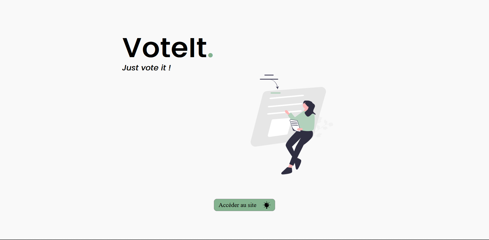
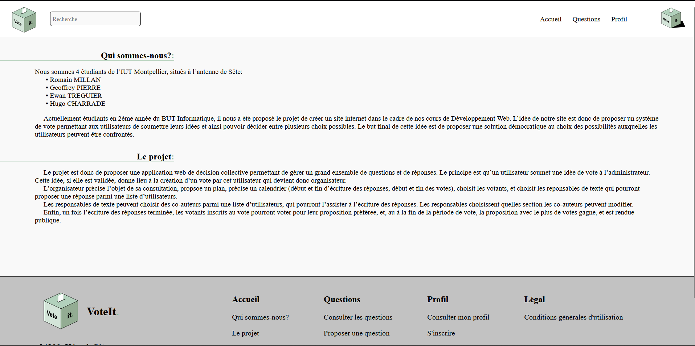
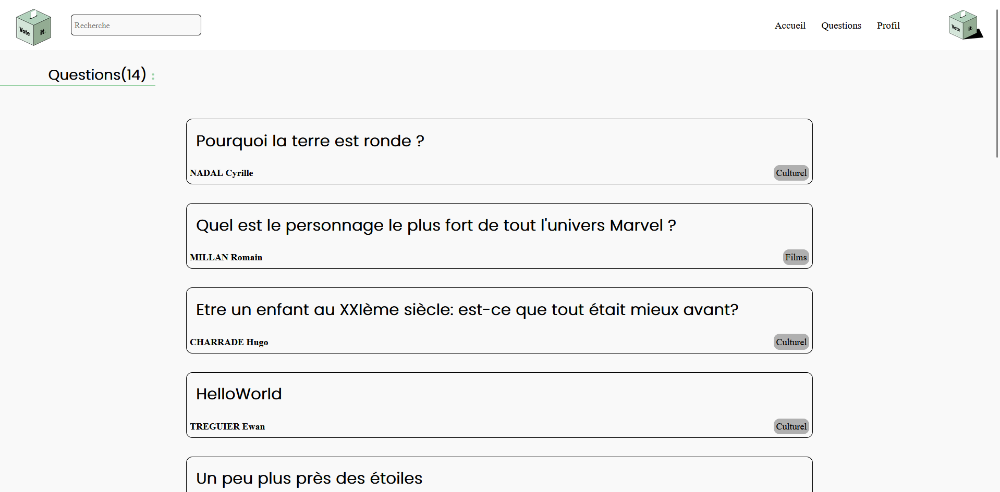
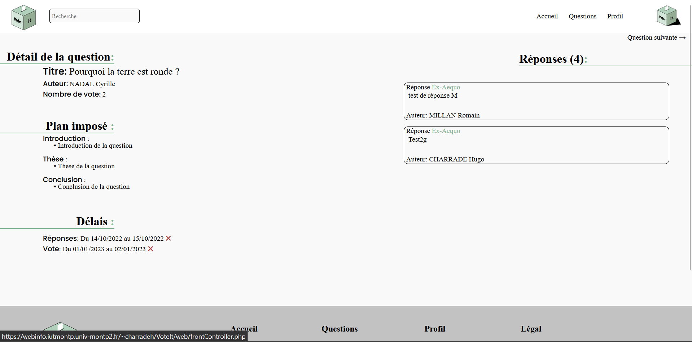
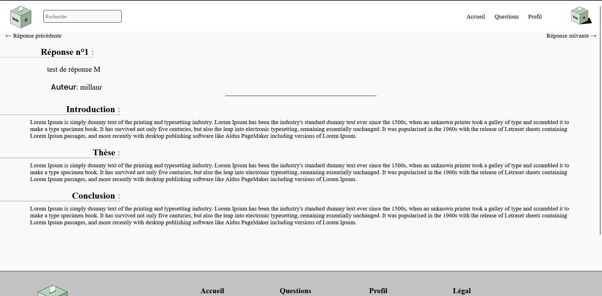

Introduction
Vote it est un site de débat et de vote en ligne qui permet à chacun de s'exprimer sur des questions de la vie quotidienne de manière simple et accessible. Notre objectif est de favoriser la participation citoyenne en permettant à tous de prendre part aux décisions qui les concernent
Exemples

Image n°1
Il s'agit ici de la page d'acceuil de VoteIt

Image n°2
Ici nous avons la page de présentation de notre site que notre équipe

Image n°3
Ici ce trouve la page qui montre la disposition des questions

Image n°4
Ceci est la page qui s'affiche quand on clique sur question, et qui affiche par conséquent le descriptif de la question

Image n°5
Cette image ici montre le descriptif d'une réponse quand on clique sur la dit question